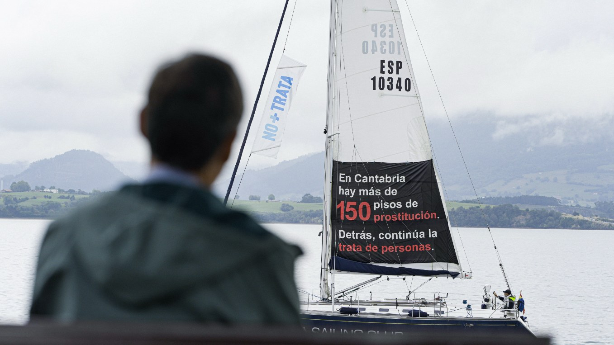

Asociación Nueva Vida
Más de tres años documentando el trabajo de una entidad que acompaña a las personas en los márgenes. Mi función principal es la de realizador documental: registrar las historias de las personas usuarias y de los programas que cambian sus vidas.

Imagen de portada- Cliente
- Asociación Nueva Vida, Santander
- Periodo
- 2023–actualidad
- Mi papel
- Realizador documental
- Formato
- Campañas, piezas audiovisuales y redes sociales
La entidad
La Asociación Nueva Vida es una organización sin ánimo de lucro que defiende los derechos de las personas en situación de exclusión. Nacida en Santander, hoy trabaja en Cantabria, Bizkaia e Illes Balears, y en 2024 atendió a más de 4.000 personas. Sus programas abarcan el sinhogarismo, la trata y la prostitución, las personas migrantes y solicitantes de protección internacional, la formación y el empleo, y las personas privadas de libertad, este último en colaboración con Instituciones Penitenciarias y una de sus señas de identidad. Centros de acogida, atención en calle, apoyo jurídico y psicológico, y NUVITEX, una empresa textil de inserción que forma y da empleo a supervivientes de trata.
 Ver
Ver
Mi papel
Realizador documental, ante todo. Mi trabajo fundamental es registrar las historias de las personas a las que acompaña Nueva Vida y los programas que hacen posible el cambio: una labor documental paciente, hecha con tiempo y respeto, que se convierte en testimonio, en memoria y en la materia prima de las campañas. A partir de ahí también llevo las campañas, desde la idea y el guion hasta el rodaje y el montaje, y el copy que sale en redes.
Campañas
- El Free Tour de la TrataUn paseo guiado por la trata que se esconde a plena vista. Más de 4 millones de visualizaciones y prensa nacional.
- Campaña 150«En Cantabria hay más de 150 pisos de prostitución. Detrás, continúa la trata de personas.» Un mensaje izado en un velero, en vídeo y en redes.
- Muy de SantanderUna campaña para la ciudad, del guion al montaje.
- @no.mas.trataEl canal contra la trata: contenido y copy, cada semana.
- 25 años de Nueva VidaLa pieza del aniversario: un cuarto de siglo en la voz de quienes lo vivieron.
Aliados
La lucha contra la trata también se juega en El Sardinero: el Real Racing Club de Santander y su Fundación se han sumado a la causa de Nueva Vida, que en 2026 les rindió homenaje en el Día Internacional contra la Explotación Sexual y la Trata.